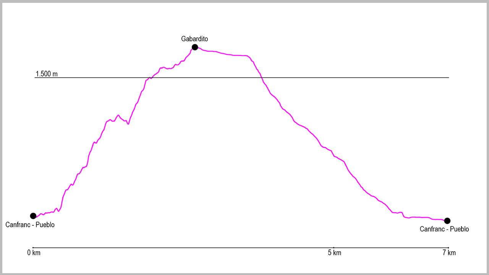

Tomaremos la salida de la ruta en el puente de arriba de Canfranc-Pueblo. Aquí cruzaremos el puente para salir la carretera nacional y cruzaremos para tomarla en dirección ascendente por el arcén izquierdo. A escasos 300 metros pasaremos a nuestra izquierda un pequeño barranco, y nada más cruzarlo pasaremos por encima del quitamiedos para empezar a ascender por el camino que comienza justo aquí.
Se trata de una subida bastante fácil al inicio, pero muy empinada. Curva tras curva iremos ganando altura hasta llegar a un primer cruce donde lo tomaremos a la derecha. Aquí el camino sigue subiendo como en la primera parte hasta llegar a una pequeña bajada que nos adentrará en el cauce del barranco. Justo cuando lleguemos a él, empieza la parte más técnica de la subida. Primero cruzaremos el barranco y justo enfrente empieza un tramo de subida muy empinada que nos conducirá a una zona de rocas. Justo aquí, unas clavijas y unas cadenas ancladas a ellas nos ayudarán a sortearlas.
Una vez pasado este tramo el camino vuelve a convertirse en una zona bastante más cómoda, aunque la inclinación seguirá siendo importante. Terminaremos de subir el desnivel y llegaremos a una pista, donde giraremos a la derecha para poco después llegar a la pradera de Gabardito. Aquí seguiremos en dirección oeste con las marcas de GR y pasaremos por debajo de un enorme árbol, hasta llegar al refugio forestal de Gabardito. Justo aquí, continuaremos un poco más la subida para llegar a un punto donde la GR11 gira a nuestra derecha. Este es el punto donde nosotros giraremos a la izquierda para continuar una primera parte por campas y rosales silvestres nuestra ruta.
Tras unos 300 metros donde el camino no está muy claro, llegaremos a una zona de bosque donde lo podremos seguir sin dificultad. El camino mantiene altura durante un buen rato antes de llegar a una antigua acequia, donde la atravesaremos y rodearemos una zona llana con una gran roca a nuestra derecha.
Pasados este punto comienza nuestro descenso hasta el punto de inicio. Toda la bajada transcurre por un cómodo sendero que nos conducirá hasta el punto donde salimos en nuestra ascensión a la pista. Al llegar a ella giraremos a nuestra izquierda para apenas 10 metros después volver a girar a nuestra derecha y en este punto coger el camino que nos conducirá hacia Canfranc-Pueblo.
Primero pasaremos por la fuente de la Pajeta, y tras varias curvas de 180 grados en el camino llegar al barranco de Los Meses, que cruzaremos por encima de un dique. Seguimos nuestro descenso para llegar a un gran muro a nuestra derecha donde una bifurcación nos hará girar a la izquierda en dirección al pueblo.
Justo cuando salgamos a la carretera cruzaremos de frente para entrar al pueblo y a su calle principal. Una vez en ella la tomaremos en dirección norte hasta que lleguemos al puente donde hemos iniciado la ruta.
